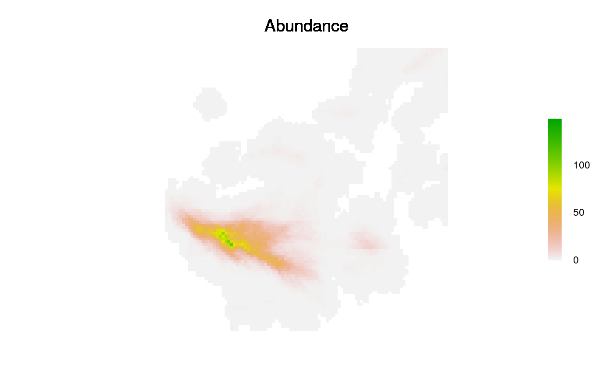

This is built with spread2 and is still experimental.
This one differs from other attempts in that it treats the advection and
dispersal as mathematical vectors that are added together.
They are "rounded" to pixel centres.
spread3(start, rasQuality, rasAbundance, advectionDir, advectionMag, meanDist, plot.it = 2, minNumAgents = 50, verbose = getOption("LandR.verbose", 0), saveStack = NULL)
| start | Raster indices from which to initiate dispersal |
|---|---|
| rasQuality | A raster with habitat quality. Currently, must be scaled from 0 to 1, i.e., a probability of "settling" |
| rasAbundance | A raster where each pixel represents the number of "agents" or pseudo-agents contained. This number of agents, will be spread horizontally, and distributed from each pixel that contains a non-zero non NA value. |
| advectionDir | A single number or |
| advectionMag | A single number or |
| meanDist | A single number indicating the mean distance parameter in map units
(not pixels), for a negative exponential distribution
dispersal kernel (e.g., |
| plot.it | Numeric. With increasing numbers above 0, there will be plots produced during iterations. Currently, only 0, 1, or 2+ are distinct. |
| minNumAgents | Single numeric indicating the minimum number of agents to consider all dispersing finished. Default is 50 |
| verbose | Numeric. With increasing numbers above 0, there will be more messages produced. Currently, only 0, 1, or 2+ are distinct. |
| saveStack | If provided as a character string, it will save each iteration
as part of a |
A data.table with all information used during the spreading
######################################################### # Simple case, no variation in rasQuality, numeric advectionDir and advectionMag ######################################################### library(raster) library(quickPlot) maxDim <- 10000 ras <- raster::raster(extent(c(0, maxDim, 0, maxDim)), res = 100, vals = 0) rasQuality <- raster(ras) rasQuality[] <- 1 rasAbundance <- raster(rasQuality) rasAbundance[] <- 0 # startPixel <- middlePixel(rasAbundance) startPixel <- sample(seq(ncell(rasAbundance)), 30) rasAbundance[startPixel] <- 1000 advectionDir <- 70 advectionMag <- 4 * res(rasAbundance)[1] meanDist <- 2600 if (interactive()) { # Test the dispersal kernel -- create a function plotDispersalKernel <- function(out, meanAdvectionMag) { out[, disGroup := round(distance / 100) * 100] freqs <- out[, .N, by = "disGroup"] freqs[, `:=`(cumSum = cumsum(N), N = N)] Plot(freqs$disGroup, freqs$cumSum, addTo = "CumulativeNumberSettled", title = "Cumulative Number Settled") # can plot the distance X number abline(v = meanAdvectionMag + meanDist) newTitle <- "Number Settled By Distance" Plot(freqs$disGroup, freqs$N, addTo = gsub(" ", "", newTitle), title = newTitle) # can plot the distance X number abline(v = meanAdvectionMag + meanDist) # should be 0.63: freqs[disGroup == meanAdvectionMag + meanDist, cumSum] / tail(freqs,1)[, cumSum] mtext(side = 3, paste("Average habitat quality: ", round(mean(rasQuality[], na.rm = TRUE), 2)), outer = TRUE, line = -2, cex = 2) } dev() # don't use Rstudio windows, which is very slow clearPlot() out <- spread3(rasAbundance = rasAbundance, rasQuality = rasQuality, advectionDir = advectionDir, advectionMag = advectionMag, meanDist = meanDist, verbose = 2, plot.it = 2) plotDispersalKernel(out, advectionMag) } ######################################################### ### The case of variable quality raster ######################################################### if (require(sf) && require(fasterize)) { library(SpaDES.tools) # for gaussMap a <- randomStudyArea(size = 1e9) ras <- raster(extent(a), res = 100) mask <- fasterize(st_as_sf(a), ras) # faster than raster::rasterize rasQuality <- gaussMap(ras) crs(rasQuality) <- crs(a) rasQuality[is.na(mask)] <- NA # rescale so min is 0.75 and max is 1 rasQuality[] <- rasQuality[] / (maxValue(rasQuality) * 4 ) + 1/4 rasAbundance <- raster(rasQuality) rasAbundance[] <- 0 startPixel <- sample(seq(ncell(rasAbundance)), 300) rasAbundance[startPixel] <- 1000 advectionDir <- 75 advectionMag <- 4 * res(rasAbundance)[1] meanDist <- 2600 clearPlot() out <- spread3(rasAbundance = rasAbundance, rasQuality = rasQuality, advectionDir = advectionDir, advectionMag = advectionMag, meanDist = meanDist, verbose = 2, plot.it = 1) if (interactive()) { plotDispersalKernel(out, advectionMag) } }#>#>#>#> #>#> #> #>#>#>#>#>#>#>#>#>#>#>#>#>#>#>#>#>#>#>#>#>#>#>#>#>#>#>#>#>#>#>#>#>#>#>#>#>#>#>#>#>#>#>#>#>#>#>#>#>#>#>#>#>#>#>#>#>#>#>#>#>#>#>#>#>#>#>#>#>#>#>#>#>#>#>#>#>#>#>#>#>#>#>#>#>#>#>#>#>#>#>#>#>#>#>#>#>#>#>#>#>#>#>#>#>#>#>#>#>#>#>#>#>#>#>#>#>#>#>#>#>#>#>#>#>#>#>#>#>#>#>#>#>#>#>#>#>#>#>#>#>#>#>#>#>#>#>#>#>#>#>#>#>#>#>#>#>#>#>#>#>#>#>#>#>#>#>#>#>#>#>#>############################################################################### ### The case of variable quality raster, raster for advectionDir & advectionMag ############################################################################### library(raster) library(quickPlot) library(SpaDES.tools) maxDim <- 10000 ras <- raster(extent(c(0, maxDim, 0, maxDim)), res = 100, vals = 0) rasQuality <- raster(ras) rasQuality[] <- 1 rasAbundance <- raster(rasQuality) rasAbundance[] <- NA # startPixel <- middlePixel(rasAbundance) startPixel <- sample(seq(ncell(rasAbundance)), 25) rasAbundance[startPixel] <- 1000 # raster for advectionDir advectionDir <- gaussMap(ras) crs(advectionDir) <- crs(rasQuality) # rescale so min is 0.75 and max is 1 advectionDir[] <- advectionDir[] / (maxValue(advectionDir)) * 180 # raster for advectionMag advectionMag <- gaussMap(ras) crs(advectionMag) <- crs(rasQuality) # rescale so min is 0.75 and max is 1 advectionMag[] <- advectionMag[] / (maxValue(advectionMag)) * 600 out <- spread3(rasAbundance = rasAbundance, rasQuality = rasQuality, advectionDir = advectionDir, advectionMag = advectionMag, meanDist = meanDist, verbose = 2, plot.it = 1)#>#>#>#>#>#>#>#>#>#>#>#>#>#>#>#>#>#>#>#>#>#>#>#>#>#>#>#>#>#>#>#>#>#>#>#>#>#>#>#>#>#>#>#>#>#>#>#>#>#>#>#>#>#>#>#>#>#>#>#>#>#>#>#>#>#>#>#>#>#>#>#>#>#>#>#>#>#>#>#>#>#>#>#>#>#>#>#>#>#>#>#>#>#>#>#>#>#>#>#>#>#>#>#>#>#>#>#>#>#>#>#>#>#>#>#>#>#>#>#>#>#>#>#>#>#>#>#>#>#>#>#>#>#>#>#>#>#>#>#>#>#>#>#>#>if (interactive()) { dev() # don't use Rstudio windows, which is very slow clearPlot() Plot(advectionDir, title = "Wind direction", cols = "Reds") Plot(advectionMag, title = "Wind speed", cols = "Blues") plotDispersalKernel(out, mean(advectionMag[])) Plot(rasAbundance, addTo = "rasAbundance", cols = "black", title = "") }# NOT RUN { ######################################### # save iterations to a stack to make animated GIF ######################################## tmpStack <- raster::rasterTmpFile("stackToAnimate") out <- spread3(rasAbundance = rasAbundance, rasQuality = rasQuality, advectionDir = advectionDir, advectionMag = advectionMag, meanDist = 2600, verbose = 2, plot.it = 0, saveStack = tmpStack) ## This animates the series of images into an animated GIF if (require(animation)) { out2 <- raster::stack(tmpStack) gifName <- file.path(tempdir(), "animation.gif") saveGIF(interval = 0.1, movie.name = gifName, expr = { for (i in seq(numLayers(out2))) plot(out2[[i]]) }) } # }